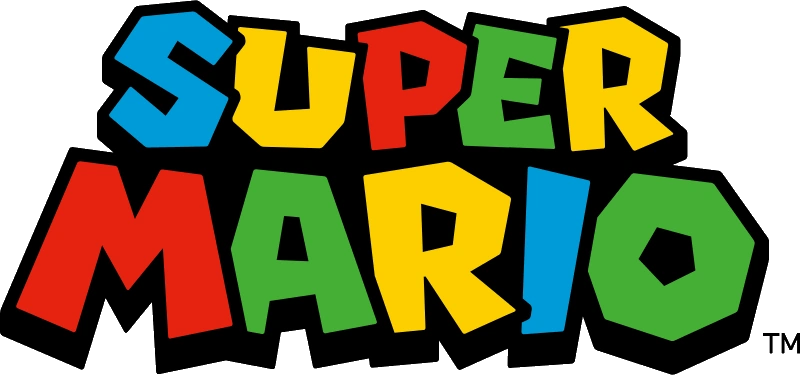

Que es super mario bros.? es un juego creado por nintento para su famosa consola nintendo entreteiment system (NES), en el cual controlamos a un fontanero que tiene que tiene habilidades unicas de salto lo cual es la mecanica principal del videojuego, sortear obstaculos adaptandose a la movilidad del personaje evitando caer en abismos sin fondo, en chocar conm enemigos y recoger valiosos recursos como hongos y estrellas que dotan de habilidades especiales a nuestro personaje mario.
el primer super mario bros. salio a la venta en el 13 de septiembre de 1985, si bien, antes este personaje aparecio con el nombre de jumpman en donkey kong y con su hermano luigi en mario bros, fue el super mario bros el que sento las bases de lo que seria no solo todos los juegos de mario sino lo que significaria para el mundo de los videojuegos.
Super Mario bros. no solo es famoso por habver sido algo tan divertido y ser una moda pasajera, fue el videojuego que salvo a estos de una terrible crisis, en donde tanto desarrolladores como jugadores no sabian mas que hacer para que el juego fuera algo divertido, sumado a una gran saturacion de titulos malos que fueron creados para aprovechar el nuevo "boom" de los videojuegos, hizò que los jugadores empezaran a desconfiar de estos y que fuera solo una moda de los 80 70. Los desarrolladores de nintendo entre ellos shigeru miyamoto y takashi tezuka conocian muy bien este problema, asi que le empezaron a dar un giro fresco a la hora de diseñar videojuegos, haciendo no solo un juego que fuera divertido sino que no necesitara mas que una simple pantalla y ganas de jugar para que cualquiera pudiera pasarla bien. Esa mentalidad de diseño de videojuegos fue y es aùn hasta hoy en dia por lo cual super mario bros. sigue siendo con diferencia una de las marcas mas famosas y que cuenta con casi nulos fracasos en sus titulos, a diferencia en otros juegos de esa epoca populares que nunca pudieron ser lo que fueron, super mario supò mantenerse durante el tiempo como el rey del diseño inteliogente de videojuegos.
fue desarrollado en Kioto, Japón, en las oficinas centrales de Nintendo. En aquella época, el equipo trabajaba bajo un secreto absoluto en salas de desarrollo donde no se permitía la entrada de cámaras ni personal ajeno para evitar filtraciones.